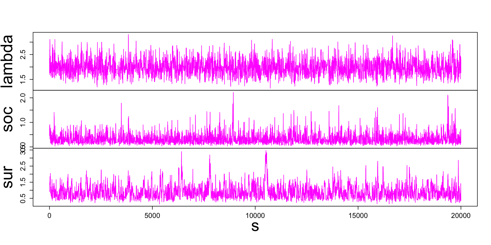
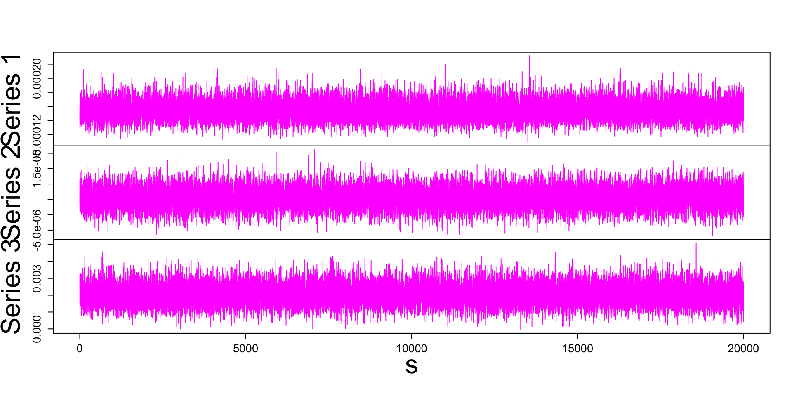
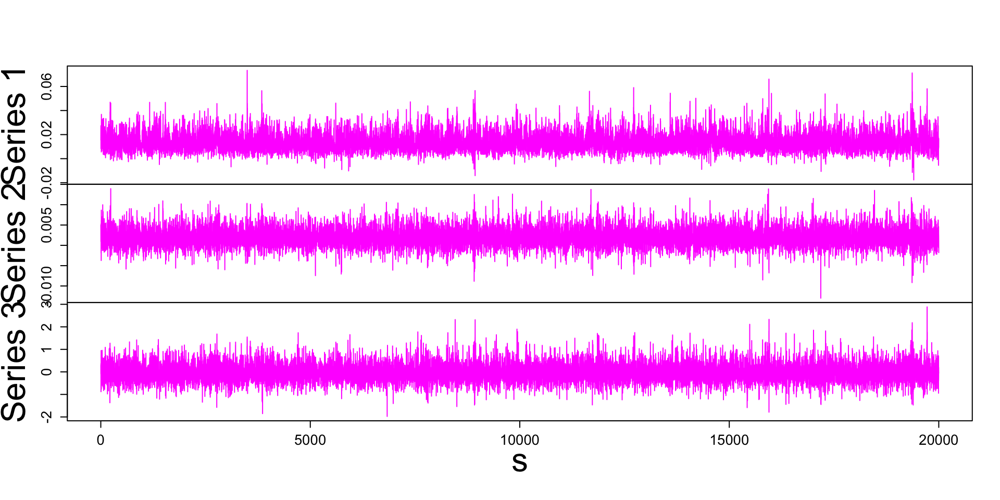

Lecture 7: Bayesian Vector Autoregressions
\[ \]
Vector Autoregressions
Three Useful Distributions
Bayesian Estimation
Minnesota and Dummy Observations Prior
Bayesian Estimation for Hierarchical Prior
Bayesian Forecasting using VARs
US Data Analysis Using R Package BVAR
Materials
\[ \]
Quarto document template for your own Australian data forecastingGitHub repo to reproduce the slides and results
Tasks
Vector Autoregressions
go-to models for forecasting
simple: linear and Gaussian
extendible: featuring many variations in specification
non-normality
heteroskedasticity
time-varying parameters
Bayesian
interpretable
Granger causality
spillovers
networks
structural
Proposed by Sims (1980)
VAR(p) Model
Model equations.
\[\begin{align*}
y_t &= \mathbf{A}_1 y_{t-1} + \dots + \mathbf{A}_p y_{t-p} + \boldsymbol\mu_0 + \epsilon_t\\
\epsilon_t|Y_{t-1} &\sim iidN\left(\mathbf{0}_N,\mathbf\Sigma\right)
\end{align*}\] for \(t=1,\dots,T\)
Notation.
\(y_t\) is an \(N\times 1\) vector of observations at time \(t\) \(\mathbf{A}_i\) - \(N\times N\) matrix of autoregressive slope parameters\(\boldsymbol\mu_0\) - \(N\times 1\) vector of constant terms\(\epsilon_t\) - \(N\times 1\) vector of error terms - a multivariate white noise process\(Y_{t-1}\) - information set collecting observations on} \(y\) up to time \(t-1\) \(\mathbf\Sigma\) - \(N\times N\) covariance matrix of the error term
A Bivariate VAR(2) Model
Let the number of variable \(N=2\) and the lag order \(p=2\) .
Then, the model equation is:
\[\begin{align*}
\begin{bmatrix} y_{1.t} \\ y_{2.t} \end{bmatrix}
&= \begin{bmatrix} \mathbf{A}_{1.11} & \mathbf{A}_{1.12} \\ \mathbf{A}_{1.21} & \mathbf{A}_{1.22} \end{bmatrix} \begin{bmatrix} y_{1.t-1} \\ y_{2.t-1} \end{bmatrix}
+ \begin{bmatrix} \mathbf{A}_{2.11} & \mathbf{A}_{2.12} \\ \mathbf{A}_{2.21} & \mathbf{A}_{2.22} \end{bmatrix} \begin{bmatrix} y_{1.t-2} \\ y_{2.t-2} \end{bmatrix} + \begin{bmatrix} \boldsymbol\mu_{0.1} \\ \boldsymbol\mu_{0.2} \end{bmatrix} + \begin{bmatrix} \epsilon_{1.t} \\ \epsilon_{2.t} \end{bmatrix}\\[2ex]
\begin{bmatrix} \epsilon_{1.t} \\ \epsilon_{2.t} \end{bmatrix} &\Big|Y_{t-1} \sim iid N_2\left( \begin{bmatrix} 0\\ 0\end{bmatrix}, \begin{bmatrix}\boldsymbol\sigma_1^2 & \boldsymbol\sigma_{12} \\ \boldsymbol\sigma_{12} & \boldsymbol\sigma_2^2\end{bmatrix} \right)
\end{align*}\]
Task:
Perform the matrix multiplications and write out the equations for \(y_{1.t}\) and \(y_{2.t}\) .
Three Useful Distributions
Matrix-Variate Normal Distribution
A \(K\times N\) matrix \(\mathbf{A}\) is said to follow a matrix-variate normal distribution: \[ \mathbf{A} \sim MN_{K\times N}\left( M, Q, P \right), \] where
\(M\) - a \(K\times N\) matrix of the mean\(Q\) - a \(N\times N\) row-specific covariance matrix\(P\) - a \(K\times K\) column-specific covariance matrix
if \(\text{vec}(\mathbf{A})\) is multivariate normal: \[ \text{vec}(\mathbf{A}) \sim N_{KN}\left( \text{vec}(M), Q\otimes P \right) \]
Density function.
\[\begin{align*}
MN_{K\times N}\left( M, Q, P \right) &\propto \exp\left\{ -\frac{1}{2}\text{tr}\left[ Q^{-1}(\mathbf{A}-M)'P^{-1}(\mathbf{A}-M) \right] \right\}
\end{align*}\]
\(\text{tr}()\) is a trace of a matrix - a sum of diagonal elements
Inverse Wishart Distribution
An \(N\times N\) square symmetric and positive definite matrix \(\mathbf\Sigma\) follows an inverse Wishart distribution: \[ \mathbf\Sigma \sim IW_{N}\left( S, \nu \right) \] where
\(S\) is \(N\times N\) positive definite symmetric matrix called the scale matrix\(\nu \geq N\) denotes degrees of freedom, if its density is given by:
Density function.
\[\begin{align*}
IW_{N}\left( S, \nu \right) \propto \text{det}(\mathbf\Sigma)^{-\frac{\nu+N+1}{2}}\exp\left\{ -\frac{1}{2}\text{tr}\left[ \mathbf\Sigma^{-1} S \right] \right\}
\end{align*}\]
Normal-Inverse Wishart Distribution
\[\begin{align*}
\mathbf{A}|\mathbf\Sigma &\sim MN_{K\times N}\left( M, \mathbf\Sigma, P \right)\\
\mathbf\Sigma &\sim IW_{N}\left( S, \nu \right)
\end{align*}\]
then the joint distribution of \((\mathbf{A},\mathbf\Sigma)\) is normal-inverse Wishart \[
p(\mathbf{A},\mathbf\Sigma) = NIW_{K\times N}\left( M,P,S,\nu\right)
\]
Density function.
\[\begin{align*}
NIW_{K\times N}\left( M,P,S,\nu\right) \propto &\text{det}(\mathbf{\Sigma})^{-(\nu+N+K+1)/2}\exp\left\{ -\frac{1}{2}\text{tr}\left[ \mathbf{\Sigma}^{-1} S \right] \right\}\\
&\times\exp\left\{ -\frac{1}{2}\text{tr}\left[ \mathbf{\Sigma}^{-1} (\mathbf{A}-M)'P^{-1}(\mathbf{A}-M) \right] \right\}
\end{align*}\]
Example: Error Term Distribution
The model assumptions state: \[\begin{align*}
\epsilon_t|Y_{t-1} &\sim iidN_N\left(\mathbf{0}_N,\mathbf\Sigma\right)
\end{align*}\]
Collect error term vectors in a \(T\times N\) matrix: \[\underset{(T\times N)}{E}= \begin{bmatrix}\epsilon_1 & \epsilon_2 & \dots & \epsilon_{T}\end{bmatrix}'\]
Error term matrix is matrix-variate distributed: \[\begin{align*}
E|X &\sim MN_{T\times N}\left(\mathbf{0}_{T\times N},\mathbf\Sigma, I_T\right)
\end{align*}\]
Tasks: what is
the covariance of \(\text{vec}(E)\)
the distribution of the first equation error terms \(\begin{bmatrix}\epsilon_{1.1} &\dots&\epsilon_{1.T}\end{bmatrix}'\)
Example: Univariate Inverse Wishart Distribution
The inverse Wishart density function is proportional to: \[\begin{align*}
\text{det}(\mathbf\Sigma)^{-\frac{\nu+N+1}{2}}\exp\left\{ -\frac{1}{2}\text{tr}\left[ \mathbf\Sigma^{-1} S \right] \right\}
\end{align*}\]
Consider a case where:
\(N=1\) the matrix \(\mathbf\Sigma\) is replaced by a scalar \(\boldsymbol\sigma^2\)
Task:
write out the kernel of the density function for \(\boldsymbol\sigma^2\)
the kernel of what density it represents?
The model in Matrix Notation
VAR(p) model.
\[\begin{align*}
y_t &= \mathbf{A}_1 y_{t-1} + \dots + \mathbf{A}_p y_{t-p} + \boldsymbol\mu_0 + \epsilon_t\\
\epsilon_t|Y_{t-1} &\sim iidN_N\left(\mathbf{0}_N,\mathbf\Sigma\right)
\end{align*}\]
Matrix notation.
\[\begin{align*}
Y &= X\mathbf{A} + E\\
E|X &\sim MN_{T\times N}\left(\mathbf{0}_{T\times N},\mathbf\Sigma, I_T\right)
\end{align*}\]
\[
\underset{(K\times N)}{\mathbf{A}}=\begin{bmatrix} \mathbf{A}_1'\\ \vdots \\ \mathbf{A}_p' \\ \boldsymbol\mu_0' \end{bmatrix} \quad
\underset{(T\times N)}{Y}= \begin{bmatrix}y_1' \\ y_2'\\ \vdots \\ y_T'\end{bmatrix} \quad
\underset{(K\times1)}{x_t}=\begin{bmatrix} y_{t-1}\\ \vdots \\ y_{t-p}\\ 1 \end{bmatrix}\quad
\underset{(T\times K)}{X}= \begin{bmatrix}x_1' \\ x_2' \\ \vdots \\ x_{T}'\end{bmatrix} \quad
\underset{(T\times N)}{E}= \begin{bmatrix}\epsilon_1' \\ \epsilon_2' \\ \vdots \\ \epsilon_{T}'\end{bmatrix}
\] where \(K=pN+1\)
The model as Predictive Density
VAR model.
\[\begin{align*}
Y &= X\mathbf{A} +E\\
E|X &\sim MN_{T\times N}\left(\mathbf{0}_{T\times N},\mathbf\Sigma, I_T\right)
\end{align*}\]
Predictive density.
\[\begin{align*}
Y|X,\mathbf{A}, \mathbf{\Sigma} &\sim MN_{T\times N}\left(X\mathbf{A},\mathbf{\Sigma},I_T\right)
\end{align*}\]
Likelihood Function
Predictive density.
\[\begin{align*}
Y|X,\mathbf{A}, \mathbf{\Sigma} &\sim MN_{T\times N}\left(X\mathbf{A},\mathbf{\Sigma},I_T\right)
\end{align*}\]
Likelihood function.
\[\begin{align*}
L\left(\mathbf{A},\mathbf{\Sigma}|Y,X\right)&\propto\text{det}(\mathbf{\Sigma})^{-\frac{T}{2}}\exp\left\{-\frac{1}{2}\text{tr}\left[\mathbf{\Sigma}^{-1}(Y-X\mathbf{A})'(Y-X\mathbf{A})\right]\right\}
\end{align*}\]
Likelihood Function as NIW
Define the MLE: \(\widehat{A}=(X'X)^{-1}X'Y\)
Perform simple transformation of the likelihood
\[\begin{align*}
L\left(\mathbf{A},\mathbf{\Sigma}|Y,X\right)&\propto\text{det}(\mathbf{\Sigma})^{-\frac{T}{2}}\exp\left\{-\frac{1}{2}\text{tr}\left[\mathbf{\Sigma}^{-1}(Y-X\mathbf{A})'(Y-X\mathbf{A})\right]\right\}\\
&=\text{det}(\mathbf{\Sigma})^{-\frac{T}{2}}\\
&\quad\times\exp\left\{ -\frac{1}{2}\text{tr}\left[\mathbf{\Sigma}^{-1}(\mathbf{A}-\widehat{A})'X'X(\mathbf{A}-\widehat{A}) \right] \right\}\\
&\quad\times \exp\left\{ -\frac{1}{2}\text{tr}\left[ \mathbf{\Sigma}^{-1}(Y-X\widehat{A})'(Y-X\widehat{A}) \right] \right\}
\end{align*}\]
Under the likelihood, \((\mathbf{A},\mathbf{\Sigma})\) are normal-inverse Wishart distributed:
\[\begin{align*}
L\left( \mathbf{A},\mathbf{\Sigma}|Y,X \right) &= NIW_{K\times N}\left(\widehat{A},(X'X)^{-1},(Y-X\widehat{A})'(Y-X\widehat{A}), T-N-K-1 \right)
\end{align*}\]
Prior Distribution
Construction.
A natural-conjugate prior leads to joint posterior distribution for \((\mathbf{A},\mathbf{\Sigma})\) of the same form \[\begin{align*}
p\left( \mathbf{A}, \mathbf{\Sigma} \right) &= p\left( \mathbf{A}| \mathbf{\Sigma} \right)p\left( \mathbf{\Sigma} \right)\\
\mathbf{A}|\mathbf{\Sigma} &\sim MN_{K\times N}\left( \underline{A},\mathbf{\Sigma},\underline{V} \right)\\
\mathbf{\Sigma} &\sim IW_N\left( \underline{S}, \underline{\nu} \right)
\end{align*}\]
Kernel.
\[\begin{align*}
p\left( \mathbf{A},\mathbf{\Sigma} \right)
&\propto \text{det}(\mathbf{\Sigma})^{-\frac{N+K+\underline{\nu}+1}{2}}\\
&\quad\times\exp\left\{ -\frac{1}{2}\text{tr}\left[ \mathbf{\Sigma}^{-1}(\mathbf{A}-\underline{A})'\underline{V}^{-1}(\mathbf{A}-\underline{A}) \right] \right\}\\
&\quad\times \exp\left\{ -\frac{1}{2}\text{tr}\left[ \mathbf{\Sigma}^{-1}\underline{S} \right] \right\}
\end{align*}\]
Posterior Distribution
Bayes Rule.
\[\begin{align*}
p\left( \mathbf{A}, \mathbf{\Sigma}|Y,X \right) &\propto L(\mathbf{A},\mathbf{\Sigma}|Y,X)p\left( \mathbf{A}, \mathbf{\Sigma} \right)\\
&= L(\mathbf{A},\mathbf{\Sigma}|Y,X)p\left( \mathbf{A}| \mathbf{\Sigma} \right)p\left( \mathbf{\Sigma} \right)
\end{align*}\]
Kernel.
\[\begin{align*}
p\left( \mathbf{A},\mathbf{\Sigma} |Y,X\right)
&\propto \text{det}(\mathbf{\Sigma})^{-\frac{T}{2}}\exp\left\{-\frac{1}{2}\text{tr}\left[\mathbf{\Sigma}^{-1}(Y-X\mathbf{A})'(Y-X\mathbf{A})\right]\right\}\\
& \quad\times\text{det}(\mathbf{\Sigma})^{-\frac{N+K+\underline{\nu}+1}{2}}\exp\left\{ -\frac{1}{2}\text{tr}\left[ \mathbf{\Sigma}^{-1}\underline{S} \right] \right\}\\
&\quad\times\exp\left\{ -\frac{1}{2}\text{tr}\left[ \mathbf{\Sigma}^{-1}(\mathbf{A}-\underline{A})'\underline{V}^{-1}(\mathbf{A}-\underline{A}) \right] \right\}
\end{align*}\]
Joint Posterior Distribution
Conditional and marginal.
\[\begin{align*}
p\left( \mathbf{A}, \mathbf{\Sigma}|Y,X \right) &= p(\mathbf{A}|Y,X,\mathbf{\Sigma})p\left( \mathbf{\Sigma}|Y,X \right)\\[2ex]
p(\mathbf{A}|Y,X,\mathbf{\Sigma}) &= MN_{K\times N}\left( \overline{A},\mathbf{\Sigma},\overline{V} \right)\\
p(\mathbf{\Sigma}|Y,X) &= IW_N\left( \overline{S}, \overline{\nu} \right)
\end{align*}\]
Posterior parameters.
\[\begin{align*}
\overline{V}&= \left( X'X + \underline{V}^{-1}\right)^{-1} \\
\overline{A}&= \overline{V}\left( X'Y + \underline{V}^{-1}\underline{A} \right)\\
\overline{\nu}&= T+\underline{\nu}\\
\overline{S}&= \underline{S}+Y'Y + \underline{A}'\underline{V}^{-1}\underline{A} - \overline{A}'\overline{V}^{-1}\overline{A}
\end{align*}\]
Posterior Mean of \(\mathbf{A}\)
Posterior mean of matrix \(\mathbf{A}\) is: \[\begin{align*}
\overline{A} &= \overline{V}\left( X'Y + \underline{V}^{-1}\underline{A} \right)\\[2ex]
&= \overline{V}\left( X'X\widehat{A} + \underline{V}^{-1}\underline{A} \right)\\[2ex]
&= \overline{V} X'X\widehat{A} + \overline{V}\underline{V}^{-1}\underline{A}
\end{align*}\] a linear combination of the MLE \(\widehat{A}\) and the prior mean \(\underline{A}\)
Note that: \[
\overline{V} X'X + \overline{V}\underline{V}^{-1} = \overline{V} ( X'X + \underline{V}^{-1}) = I_K
\]
Play with the posterior in an interactive graph
Marginal Data Density
According to Bayes Rule , the kernel of the posterior is normalised by the Marginal Data Density \(p(data)\) :
\[
p\left( \mathbf{A}, \mathbf{\Sigma}| data \right) = \frac{L(\mathbf{A},\mathbf{\Sigma}| data)p\left( \mathbf{A}, \mathbf{\Sigma} \right)}{p(data)}
\]
For Bayesian VARs the posterior is known \[
p\left( \mathbf{A}, \mathbf{\Sigma}| data \right) = MNIW\left(\overline{A},\overline{V}, \overline{S}, \overline{\nu} \right)
\]
and so is the analytical formula for the MDD : \[p(data)\]
This can be used to our advantage!
Minnesota and Dummy Observations Prior
Minnesota Prior
Sims, Litterman, Doan (1984) proposed an interpretable way of setting the hyper-parameters on the NIW prior \(\underline{A}\) , \(\underline{V}\) , \(\underline{S}\) , and \(\underline{\nu}\) for macroeconomic data.
\[ \] The prior reflects the following stylised facts about macro time series:
the data are unit-root non-stationary
the effect of more lagged variables should be smaller and smaller
the effect of other variables lags should be less than that of own lags
Minnesota Prior
Inverse-Wishart prior.
\[\begin{align*}
\mathbf{\Sigma} &\sim IW_N\left( \underline{S}, \underline{\nu} \right)
\end{align*}\]
Set
\[\begin{align*}
\underline{S} &= \begin{bmatrix}
\psi_1 &0 &\dots & 0 \\
0 & \psi_2 &\dots & 0\\
\vdots &\vdots&\ddots& \vdots\\
0&0&\dots&\psi_N
\end{bmatrix}\\[2ex]
\underline{\nu}&= N+2
\end{align*}\]
Hyper-parameters.
\(\psi =(\psi_1, \dots, \psi_N)\) have to be chosen (or estimated)
Minnesota Prior
Matrix-Variate Normal prior.
\[\begin{align*}
\mathbf{A}|\mathbf{\Sigma} &\sim MN_{K\times N}\left( \underline{A},\mathbf{\Sigma},\underline{V} \right)
\end{align*}\]
Set \[\begin{align*}
\underline{A} &= \begin{bmatrix} I_N \\ \mathbf{0}_{((p-1)N +1)\times N}\end{bmatrix}&
\underline{V}_{ij} &= \left\{\begin{array} (\lambda ^ 2 / (\psi_k l^2) &\text{ for }i=j,\text{ and } i\neq pN+1 \\
\lambda^2 &\text{ for }i=j,\text{ and } i= pN+1 \\
0&\text{ for } i\neq j
\end{array}\right.
\end{align*}\]
for \(\quad l = 1+\text{floor}((i-1)/N) \quad\text{and }\quad k = i - (l-1)N\)
Hyper-parameters.
\(\lambda^2\) has to be chosen (or estimated)
Dummy Observations Prior
Idea.
Generate artificial data matrices with \(T_d\) rows \(Y^*\) and \(X^*\)
Append them to the original data matrices \(Y\) and \(X\) respectively.
Implied prior distribution.
Use Bayes Rule to derive the joint prior of \((\mathbf{A},\mathbf\Sigma)\) given \(Y^*\) and \(X^*\) .
It is given by the MNIW distribution:
\[\begin{align*}
p\left( \mathbf{A}, \mathbf{\Sigma}|Y^*,X^* \right) &= MNIV_{K\times N}\left( \underline{A}^*,\underline{V}^*, \underline{S}^*, \underline{\nu}^* \right)
\end{align*}\] \[\begin{align*}
\underline{V}^*&= \left( X^{*\prime}X^* + \underline{V}^{-1}\right)^{-1} & \underline{A}^*&= \underline{V}^*\left( X^{*\prime}Y^* + \underline{V}^{-1}\underline{A} \right)\\
\underline{\nu}^*&= T_d+\underline{\nu} & \underline{S}^*&= \underline{S}+Y^{*\prime}Y^* + \underline{A}'\underline{V}^{-1}\underline{A} - \underline{A}^{*\prime}\underline{V}^{*-1}\underline{A}^*
\end{align*}\]
Dummy Observations Prior
Let a \(p\times N\) matrix \(Y_0\) denote the initial observations, that is, the first \(p\) observations of the available time series.
Let an \(N\) -vector \(\bar{Y}_0\) denote its columns’ means.
Sum-of-coefficients prior.
Generate additional \(N\) rows by \[
Y^+ = \text{diag}\left(\frac{\bar{Y}_0}{\mu}\right) \quad\text{ and }\quad X^+ = \begin{bmatrix}\mathbf{0}_N & Y^+ & \dots & Y^+ \end{bmatrix}
\]
\(\mu\) is a hyper-parameter to be chosen (or estimated)if \(\mu \rightarrow 0\) the prior implies the presence of a unit root in each equation and rules out cointegration
if \(\mu \rightarrow\infty\) the prior becomes uninformative
Dummy Observations Prior
Dummy-initial-observation prior.
Generate an additional row by \[
Y^{++} = \frac{\bar{Y}_0'}{\delta} \quad\text{ and }\quad X^{++} = \begin{bmatrix}\frac{1}{\delta} & Y^{++} & \dots & Y^{++} \end{bmatrix}
\]
hyper-parameter \(\delta\) is to be chosen (or estimated)
if \(\delta \rightarrow 0\) all the variables of the VAR are forced to be at their unconditional mean, or the system is characterized by the presence of an unspecified number of unit roots without drift (cointegration)
if \(\delta \rightarrow\infty\) the prior becomes uninformative
Combining dummy observations.
\[
Y^* = \begin{bmatrix}Y^+ \\ Y^{++} \end{bmatrix}\quad\text{ and }\quad
X^* = \begin{bmatrix}X^+ \\ X^{++} \end{bmatrix}
\]
Dummy Observations Prior
Task.
Suppose that:
\(\bar{Y}_0 = \begin{bmatrix}1&2\end{bmatrix}'\) \(\mu = 0.5\) \(\delta = 3\) \(p = 1\)
Write out the matrices \(Y^*\) and \(X^*\) of dimensions \(2\times 3\) and \(3\times 3\) respectively.
Bayesian Estimation for Hierarchical Prior
Bayesian Estimation for Hierarchical Prior
Hyper-parameters \(\psi\) , \(\lambda\) , \(\mu\) and \(\delta\) can be fixed to values chosen by the econometrician.
Hierarcical prior.
A better idea is to assume priors for these hyper-parameters and estimate them as in Giannone, Lenza, Primiceri (2015) .
Extend the existing prior to: \[\begin{align*}
p\left( \mathbf{A}, \mathbf{\Sigma}|Y^*,X^*,\psi,\lambda,\mu,\delta \right) &= MNIV_{K\times N}\left( \underline{A}^*,\underline{V}^*, \underline{S}^*, \underline{\nu}^* \right)
\end{align*}\] And specify: \[\begin{align*}
\psi_n &\sim IG\left(0.02^2, 0.02^2\right)\\
\lambda &\sim G\left(0.2,2\right)\\
\mu &\sim G\left(1,2\right)\\
\delta &\sim G\left(1,2\right)
\end{align*}\]
Bayesian Estimation for Hierarchical Prior
Giannone, Lenza, Primiceri (2015) propose the following estimation procedure:
Step 1: Estimate \((\psi,\lambda,\mu,\delta)\) using a random-walk Metropolis-Hastings sampler
Sample these hyper-parameters marginally on \((\mathbf{A},\mathbf\Sigma)\)
extend the conditioning of Marginal Data Density : \[ p(data|\psi,\lambda,\mu,\delta)\]
apply Bayes Rule to obtain the kernel of the posterior:
\[ p(\psi,\lambda,\mu,\delta|data) \propto p(\psi,\lambda,\mu,\delta)p(data|\psi,\lambda,\mu,\delta)\] - Use an \((N+3)\) -variate Student-t distribution as the candidate generating density
Bayesian Estimation for Hierarchical Prior
Step 2: For each draw of \((\psi,\lambda,\mu,\delta)\) sample the corresponding draw of \((\mathbf{A},\mathbf{\Sigma})\)
Use the MNIW posterior derived for the implied prior:
\[\begin{align*}
p\left( \mathbf{A}, \mathbf{\Sigma}|Y,X, Y^*,X^* \right) &= MNIW_{K\times N}\left( \overline{A}^*,\overline{V}^*,\overline{S}^*, \overline{\nu}^* \right)\\[2ex]
\overline{V}^*&= \left( X'X + \underline{V}^{*-1}\right)^{-1} \\
\overline{A}^*&= \overline{V}^*\left( X'Y + \underline{V}^{*-1}\underline{A}^* \right)\\
\overline{\nu}^*&= T+\underline{\nu}^*\\
\overline{S}^*&= \underline{S}^*+Y'Y + \underline{A}^{*\prime}\underline{V}^{*-1}\underline{A}^* - \overline{A}^{*\prime}\overline{V}^{*-1}\overline{A}^*
\end{align*}\]
R implementation.
Package BVAR Kuschnig, Vashold (2021) implements this algorithm.
Bayesian Forecasting using VARs
The objective of economic forecasting
\(\left.\right.\)
… is to use the available data to provide a statistical characterisation of the unknown future values of quantities of interest.
\(\left.\right.\)
The full statistical characterisation of the unknown future values of random variables is given by their predictive density .
\(\left.\right.\)
Simplified outcomes in a form of statistics summarising the predictive densities are usually used in decision-making processes.
\(\left.\right.\)
Summary statistics are also communicated to general audiences.
One-Period Ahead Predictive Density
VAR(p) model.
\[\begin{align*}
y_t &= \mathbf{A}_1 y_{t-1} + \dots + \mathbf{A}_p y_{t-p} + \boldsymbol\mu_0 + \epsilon_t\\[2ex]
\epsilon_t|Y_{t-1} &\sim iidN_N\left(\mathbf{0}_N,\mathbf\Sigma\right)\\
&
\end{align*}\]
One-Period Ahead Conditional Predictive Density
… is implied by the model formulation: \[\begin{align*}
y_{t+h}|Y_{t+h-1},\mathbf{A},\mathbf\Sigma &\sim N_N\left(\mathbf{A}_1 y_{t+h-1} + \dots + \mathbf{A}_p y_{t+h-p} + \boldsymbol\mu_0,\mathbf\Sigma\right)
\end{align*}\]
One-Period Ahead Predictive Density
\(\left.\right.\)
Bayesian forecasting takes into account the uncertainty w.r.t. parameter estimation by integrating it out from the predictive density.
\[\begin{align*}
&\\
p(y_{T+1}|Y,X) &= \int p(y_{T+1}|Y_{T},\mathbf{A},\mathbf\Sigma) p(\mathbf{A},\mathbf\Sigma|Y,X) d(\mathbf{A},\mathbf\Sigma)\\ &
\end{align*}\]
\(p(y_{T+1}|Y,X)\) - predictive density\(p(y_{T+1}|Y_{t},\mathbf{A},\mathbf\Sigma)\) - one-period-ahead conditional predictive density\(p(\mathbf{A},\mathbf\Sigma|Y,X)\) - marginal posterior distribution
Sampling from One-Period Ahead Predictive Density
\(\left.\right.\)
Step 1: Sample from the posterior
… and obtain \(S\) draws \(\left\{ \mathbf{A}^{(s)},\mathbf\Sigma^{(s)} \right\}_{s=1}^{S}\)
\(\left.\right.\)
Step 2: Sample from the predictive density
In order to obtain draws from \(p(y_{T+1}|Y,X)\) , for each of the \(S\) draws of \((\mathbf{A},\mathbf\Sigma)\) sample the corresponding draw of \(y_{T+1}\) :
Sample \(y_{T+1}^{(s)}\) from \[
N_N\left(\mathbf{A}_1^{(s)} y_{T} + \dots + \mathbf{A}_p^{(s)} y_{T-p+1} + \boldsymbol\mu_0^{(s)},\mathbf\Sigma^{(s)}\right)
\] and obtain \(\left\{y_{T+1}^{(s)}\right\}_{s=1}^{S}\)
\(h\) -Period Ahead Predictive Density\(\left.\right.\)
This procedure can be generalised to any forecasting horizon.
This is an illustration for \(h=2\) .
\[\begin{align*}
&\\
p(y_{T+2},y_{T+1}|Y,X)
&= \int p(y_{T+2},y_{T+1}|Y_{T},\mathbf{A},\mathbf\Sigma) p(\mathbf{A},\mathbf\Sigma|Y,X) d(\mathbf{A},\mathbf\Sigma)\\[1ex]
&= \int p(y_{T+2}|y_{T+1},Y_{T},\mathbf{A},\mathbf\Sigma)p(y_{T+1}|Y_{T},\mathbf{A},\mathbf\Sigma) p(\mathbf{A},\mathbf\Sigma|Y,X) d(\mathbf{A},\mathbf\Sigma)\\ &
\end{align*}\]
\(h\) -Period Ahead Predictive Density\(\left.\right.\)
Step 1: Sample from the posterior
… and obtain \(S\) draws \(\left\{ \mathbf{A}^{(s)},\mathbf\Sigma^{(s)} \right\}_{s=1}^{S}\)
Step 2: Sample from 1-period ahead predictive density
For each of the \(S\) draws, sample \(y_{T+1}^{(s)}\) from \[
N_N\left(\mathbf{A}_1^{(s)} y_{T} + \dots + \mathbf{A}_p^{(s)} y_{T-p+1} + \boldsymbol\mu_0^{(s)},\mathbf\Sigma^{(s)}\right)
\]
Step 3: Sample from 2-period ahead predictive density
For each of the \(S\) draws, sample \(y_{T+2}^{(s)}\) from \[
N_N\left(\mathbf{A}_1^{(s)} y_{T+1}^{(s)} + \mathbf{A}_2 y_{T} + \dots + \mathbf{A}_p^{(s)} y_{T-p+2} + \boldsymbol\mu_0^{(s)},\mathbf\Sigma^{(s)}\right)
\]
and obtain \(\left\{y_{T+2}^{(s)},y_{T+1}^{(s)}\right\}_{s=1}^{S}\)
US Data Analysis Using R Package BVAR
Data preparation
set.seed (42 )library (BVAR)# data = fred_qd[, c ("GDPC1" , "GDPCTPI" , "FEDFUNDS" )]= fred_transform (codes = c (4 , 4 , 1 )plot.ts (main = "" ,col = "#FF00FF" ,lwd = 4 ,cex.axis = 2 ,cex.lab = 2
Prior setup
# priors = bv_minnesota (lambda = bv_lambda (mode = 0.2 , sd = 0.4 , min = 0.0001 , max = 5 ),alpha = bv_alpha (mode = 2 ), <- bv_psi (scale = 0.004 , shape = 0.004 , mode = "auto" , min = "auto" , max = "auto" ),var = 1e07 = bv_soc (mode = 1 , sd = 1 , min = 1e-04 , max = 50 )= bv_sur (mode = 1 , sd = 1 , min = 1e-04 , max = 50 )= bv_priors (hyper = "auto" , mn = mn, soc = soc, sur = sur)# MH setup = bv_metropolis (scale_hess = c (0.05 , 0.0001 , 0.0001 ),adjust_acc = TRUE , acc_lower = 0.25 , acc_upper = 0.45
Estimation
# estimation = 5 = bvar (lags = p, n_draw = 3e4 ,n_burn = 1e4 ,n_thin = 1 ,priors = priors, mh = mh, verbose = TRUE # with progress bar
Optimisation concluded.
Posterior marginal likelihood: 1427.162
Hyperparameters: lambda = 1.90846; soc = 0.19232; sur = 0.59946
|
| | 0%
|
| | 1%
|
|= | 1%
|
|= | 2%
|
|== | 2%
|
|== | 3%
|
|== | 4%
|
|=== | 4%
|
|=== | 5%
|
|==== | 5%
|
|==== | 6%
|
|===== | 6%
|
|===== | 7%
|
|===== | 8%
|
|====== | 8%
|
|====== | 9%
|
|======= | 9%
|
|======= | 10%
|
|======= | 11%
|
|======== | 11%
|
|======== | 12%
|
|========= | 12%
|
|========= | 13%
|
|========= | 14%
|
|========== | 14%
|
|========== | 15%
|
|=========== | 15%
|
|=========== | 16%
|
|============ | 16%
|
|============ | 17%
|
|============ | 18%
|
|============= | 18%
|
|============= | 19%
|
|============== | 19%
|
|============== | 20%
|
|============== | 21%
|
|=============== | 21%
|
|=============== | 22%
|
|================ | 22%
|
|================ | 23%
|
|================ | 24%
|
|================= | 24%
|
|================= | 25%
|
|================== | 25%
|
|================== | 26%
|
|=================== | 26%
|
|=================== | 27%
|
|=================== | 28%
|
|==================== | 28%
|
|==================== | 29%
|
|===================== | 29%
|
|===================== | 30%
|
|===================== | 31%
|
|====================== | 31%
|
|====================== | 32%
|
|======================= | 32%
|
|======================= | 33%
|
|======================= | 34%
|
|======================== | 34%
|
|======================== | 35%
|
|========================= | 35%
|
|========================= | 36%
|
|========================== | 36%
|
|========================== | 37%
|
|========================== | 38%
|
|=========================== | 38%
|
|=========================== | 39%
|
|============================ | 39%
|
|============================ | 40%
|
|============================ | 41%
|
|============================= | 41%
|
|============================= | 42%
|
|============================== | 42%
|
|============================== | 43%
|
|============================== | 44%
|
|=============================== | 44%
|
|=============================== | 45%
|
|================================ | 45%
|
|================================ | 46%
|
|================================= | 46%
|
|================================= | 47%
|
|================================= | 48%
|
|================================== | 48%
|
|================================== | 49%
|
|=================================== | 49%
|
|=================================== | 50%
|
|=================================== | 51%
|
|==================================== | 51%
|
|==================================== | 52%
|
|===================================== | 52%
|
|===================================== | 53%
|
|===================================== | 54%
|
|====================================== | 54%
|
|====================================== | 55%
|
|======================================= | 55%
|
|======================================= | 56%
|
|======================================== | 56%
|
|======================================== | 57%
|
|======================================== | 58%
|
|========================================= | 58%
|
|========================================= | 59%
|
|========================================== | 59%
|
|========================================== | 60%
|
|========================================== | 61%
|
|=========================================== | 61%
|
|=========================================== | 62%
|
|============================================ | 62%
|
|============================================ | 63%
|
|============================================ | 64%
|
|============================================= | 64%
|
|============================================= | 65%
|
|============================================== | 65%
|
|============================================== | 66%
|
|=============================================== | 66%
|
|=============================================== | 67%
|
|=============================================== | 68%
|
|================================================ | 68%
|
|================================================ | 69%
|
|================================================= | 69%
|
|================================================= | 70%
|
|================================================= | 71%
|
|================================================== | 71%
|
|================================================== | 72%
|
|=================================================== | 72%
|
|=================================================== | 73%
|
|=================================================== | 74%
|
|==================================================== | 74%
|
|==================================================== | 75%
|
|===================================================== | 75%
|
|===================================================== | 76%
|
|====================================================== | 76%
|
|====================================================== | 77%
|
|====================================================== | 78%
|
|======================================================= | 78%
|
|======================================================= | 79%
|
|======================================================== | 79%
|
|======================================================== | 80%
|
|======================================================== | 81%
|
|========================================================= | 81%
|
|========================================================= | 82%
|
|========================================================== | 82%
|
|========================================================== | 83%
|
|========================================================== | 84%
|
|=========================================================== | 84%
|
|=========================================================== | 85%
|
|============================================================ | 85%
|
|============================================================ | 86%
|
|============================================================= | 86%
|
|============================================================= | 87%
|
|============================================================= | 88%
|
|============================================================== | 88%
|
|============================================================== | 89%
|
|=============================================================== | 89%
|
|=============================================================== | 90%
|
|=============================================================== | 91%
|
|================================================================ | 91%
|
|================================================================ | 92%
|
|================================================================= | 92%
|
|================================================================= | 93%
|
|================================================================= | 94%
|
|================================================================== | 94%
|
|================================================================== | 95%
|
|=================================================================== | 95%
|
|=================================================================== | 96%
|
|==================================================================== | 96%
|
|==================================================================== | 97%
|
|==================================================================== | 98%
|
|===================================================================== | 98%
|
|===================================================================== | 99%
|
|======================================================================| 99%
|
|======================================================================| 100%
Finished MCMC after 8.11 secs.
Forecasting
# forecasting predict (run) <- predict (horizon = 20 , conf_bands = seq (from = 0.05 , to = 0.4 , by = 0.01 )plot (predict (run), area = TRUE , t_back = 32 ,vars = c ("GDPC1" )
Forecasting
= aperm (run$ fcast$ fcast, c (2 ,3 ,1 ))= dim (Y.h)[1 ].1 = range (Y.h[,1 ,])= apply (Y.h[,1 ,],1 ,mean)= apply (Y.h[,1 ,],1 ,HDInterval:: hdi,credMass= 0.90 )= seq (from= limits.1 [1 ], to= limits.1 [2 ], length.out= 100 )= matrix (NA ,h,99 )for (i in 1 : h){= hist (Y.h[i,1 ,], breaks= x, plot= FALSE )$ density= hist (Y.h[i,1 ,], breaks= x, plot= FALSE )$ mids= 1 : h= t (z)library (plot3D)= 180 = 15.5 = persp3D (x= x, y= yy, z= z, phi= phi, theta= theta, xlab= " \n rgdp[t+h|t]" , ylab= "h" , zlab= " \n predictive densities of rgdp" , shade= NA , border= NA , ticktype= "detailed" , nticks= 3 ,cex.lab= 1 , col= NA ,plot= FALSE )perspbox (x= x, y= yy, z= z, bty= "f" , col.axis= "black" , phi= phi, theta= theta, xlab= " \n rgdp[t+h|t]" , ylab= "h" , zlab= " \n predictive densities of rgdp" , ticktype= "detailed" , nticks= 3 ,cex.lab= 1 , col = NULL , plot = TRUE )polygon3D (x= c (interval.f[1 ,],interval.f[2 ,h: 1 ]), y= c (1 : h,h: 1 ), z= rep (0 ,2 * h), col = "#FF00FF" , NAcol = "white" , border = NA , add = TRUE , plot = TRUE )for (i in 1 : h){= trans3d (x= x, y= yy[i], z= z[,i], pmat= f4)lines (f4.l, lwd= 0.5 , col= "black" )= trans3d (x= point.f, y= yy, z= 0 , pmat= f4)lines (f4.l1, lwd= 2 , col= "black" )
MCMC convergence for hyper-parameters
plot.ts (run$ hyper, main = "" , col = "#FF00FF" , xlab = "s" , cex.lab = 2 , cex.axis = 1.3 )

MCMC convergence for \(\mathbf\Sigma_{\cdot1}\)
plot.ts (run$ sigma[,1 ,], main = "" , col = "#FF00FF" , xlab = "s" , cex.lab = 2 , cex.axis = 1.3 )

MCMC convergence for \(\boldsymbol\mu_0\)
plot.ts (run$ beta[,1 ,], main = "" , col = "#FF00FF" , xlab = "s" , cex.lab = 2 , cex.axis = 1.3 )

Posterior means for \(\mathbf{A}\)
= t (apply (run$ beta, 2 : 3 , mean))rownames (mean_A) = colnames (x)colnames (mean_A) = c ("mu0" ,paste0 ("A" ,1 : p %x% rep (1 ,3 ))):: kable (mean_A, caption = "Posterior estimates for autoregressive parameters" , digits = 2 )
Posterior estimates for autoregressive parameters
0.01
1.00
-0.08
0.0
0.07
0.06
0.00
-0.03
0.00
0.00
-0.02
0.00
0.00
-0.03
0.01
0.00
0.00
-0.01
1.37
0.0
0.01
-0.13
0.00
0.00
-0.10
0.00
0.00
-0.08
0.00
0.00
-0.07
0.00
-0.02
11.19
12.35
1.2
-3.29
1.64
-0.49
-4.00
-9.48
0.36
-2.42
-3.54
-0.11
-1.49
-0.98
-0.03
Posterior means for \(\mathbf\Sigma\)
= t (apply (run$ sigma, 2 : 3 , mean))= cbind (mean_S, cov2cor (mean_S))rownames (mean_S) = colnames (x)colnames (mean_S) = c (rep ("cov" ,3 ),rep ("cor" ,3 )):: kable (mean_S, caption = "Posterior estimates for covariance" , digits = 5 )
Posterior estimates for covariance
0.00015
0.00001
0.00205
1.00000
0.10159
0.21068
0.00001
0.00002
0.00034
0.10159
1.00000
0.10226
0.00205
0.00034
0.61374
0.21068
0.10226
1.00000
Posterior means for hyper-parameters
= rbind (apply (run$ hyper, 2 , mean), apply (run$ hyper, 2 , sd))rownames (mean_h) = c ("E[hyper|data]" , "sd[hyper|data]" ):: kable (mean_h, caption = "Posterior estimates for hyper-parameters" , digits = 3 )
Posterior estimates for hyper-parameters
E[hyper|data]
1.984
0.323
0.895
sd[hyper|data]
0.304
0.206
0.428